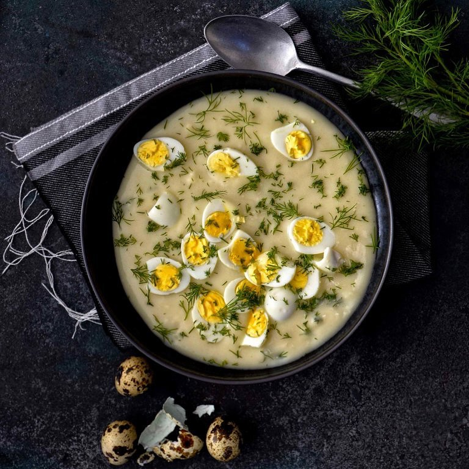

Kôprová omáčka podľa @primafresh — Normy Jedál
Polozapomenutý recept na krémovou hořčičnou omáčku, typický pro středoevropskou kuchyni, německy bytelný, ale s jistým francouzským půvabem (však si také Francouzi nárokují sametový bešamel) si rozhodně zaslouží renesanci. Vyzkoušejte zajímavou chuťovou variaci na naši klasickou koprovku s vejci natvrdo.
Odkaz na recept najdete v našem profilu (tap.bio) i ve stories 👍🏻
.
.
#primafresh #casopisprimafresh #vejce #vejcenatvrdo #koprovka #kopr #koprovaomacka #horcice #omacka #omacky #bezmasa